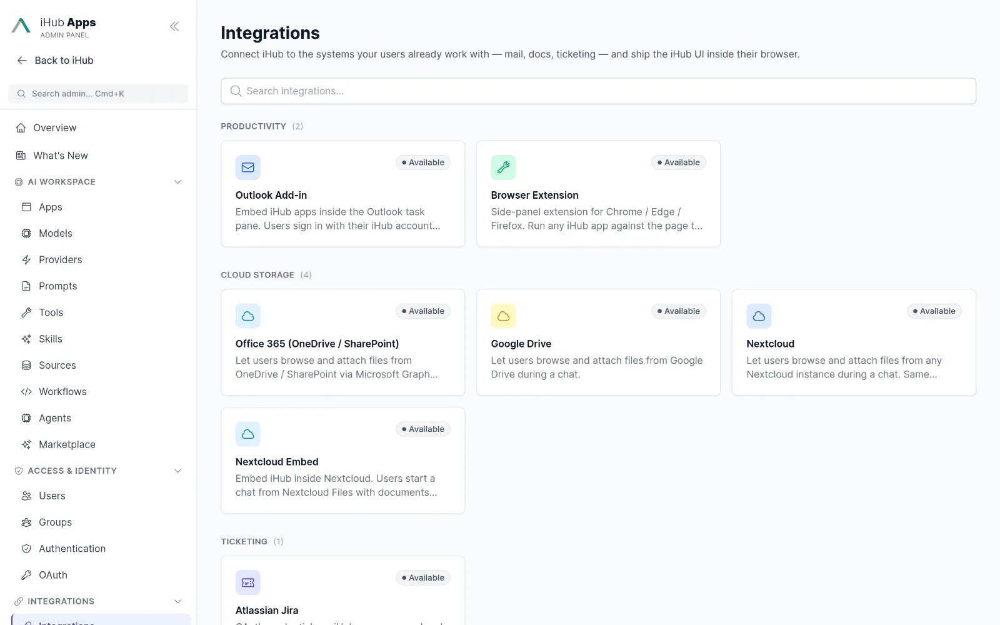
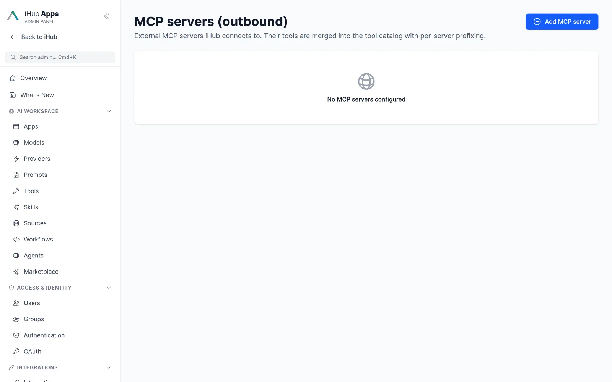
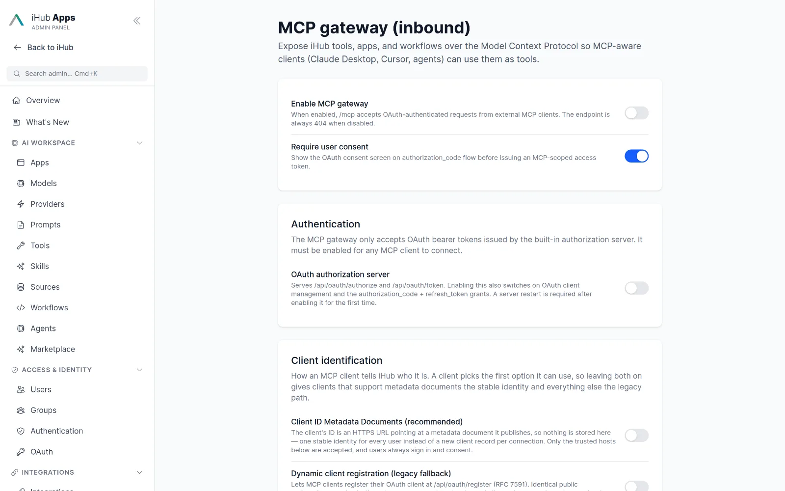
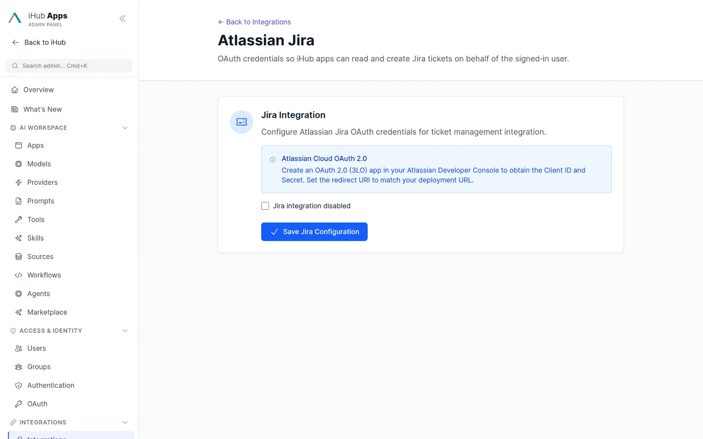
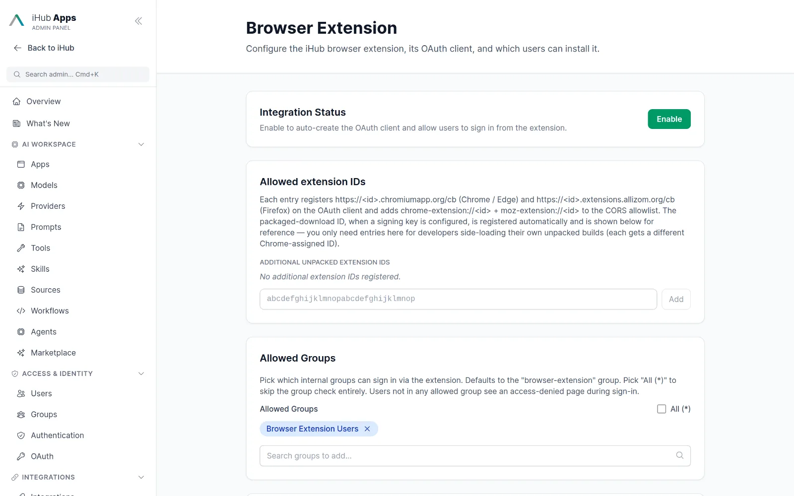
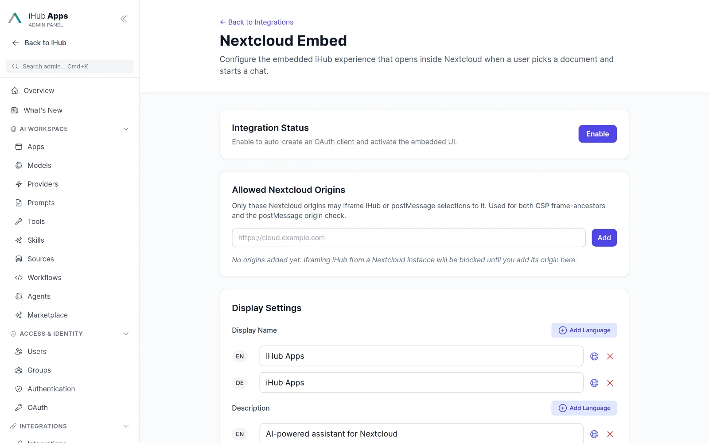
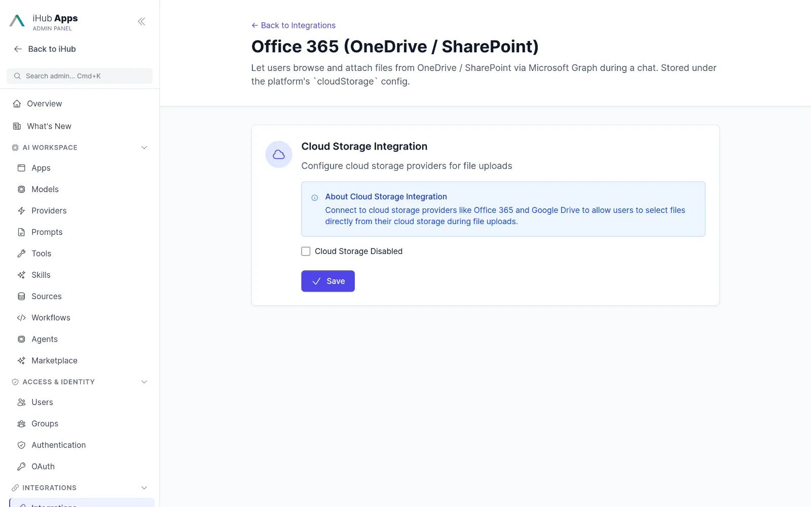

Plug iHub into the tools you already use.
Built-in tools, any OpenAPI service, MCP servers in and out, and add-ins for Outlook, the browser and Nextcloud. All governed centrally.

Three ways to connect.
Integrate natively
Web search (Brave, Staan, Qwant, native grounding), web content extraction, screenshots, Jira, Microsoft Entra people search, iFinder, iAssistant, Google Drive, Office 365 and Nextcloud file pickers.
Import any OpenAPI service
Paste a spec URL or JSON/YAML, pick the operations the model may call, and use centrally stored credentials. Requests are SSRF-guarded and logged.
Read the guide →Add capabilities via MCP
Connect any MCP server over Streamable HTTP or SSE with bearer or OAuth authentication, allowlists and tool prefixes. And expose iHub itself as an MCP server.
MCP documentation →Built-in tools and connectors.
Tools with central credentials
18 tools ship with the platform, from ask_user and web search to iFinder and Entra people search. Credentials for external services live in one encrypted store and are referenced by tools and models.

MCP servers as tool providers
Register remote MCP servers, choose which tools to expose, prefix names to avoid collisions and reconnect automatically. Private IP ranges are blocked by default.

iHub as an MCP server for Claude, Cursor and VS Code
The MCP gateway exposes your apps, tools, workflows and resources to external agents behind OAuth 2.0 with dynamic client registration. Approve clients individually, revoke connections and run stateless behind a load balancer.

Jira, Office 365, Google Drive, Nextcloud
Users connect Jira with OAuth and search, read, comment on and transition tickets from chat. File pickers bring documents from OneDrive, SharePoint, Teams libraries, Google Drive and Nextcloud into any app.

Bring iHub to where people work.
Outlook add-in
Summarize the open thread, reply, reply all, forward or draft a new mail, insert into the draft, and prepare for the meeting in the open calendar item. Deployed centrally from the Microsoft 365 admin center.
- Desktop, web and mobile Outlook
- Attachments as context
- Attach documents found in iAssistant

Browser extension
A side panel for Chrome, Edge and Firefox that sends the current page to any app. Signed CRX or ZIP builds, OAuth with PKCE, no data stored in the extension.

Nextcloud app and embed
“Chat with iHub” inside Nextcloud Files, plus an embeddable full-page view protected by OAuth and a frame-ancestors policy.

Microsoft Teams tab
A personal tab with Teams single sign-on, so the whole workspace is one click away inside Teams.

Enterprise knowledge from IntraFind.
iFinder and iAssistant
Use IntraFind iFinder as a knowledge source with the user’s own permissions: pin a document or drive a search query. iAssistant adds grounded retrieval-augmented answers as a model in its own right.
- Seven iFinder tools: search, content, metadata, facets, profiles
- JWT or OIDC identity pass-through
- Audit-grade quote validation for reviews

Catalogue
Everything that ships or connects today.
Search & web
- Brave Search
- Staan (EU)
- Qwant
- Google grounding
- OpenAI web search
- Anthropic web search
- Web content extractor
- Playwright screenshot
- Selenium screenshot
Enterprise systems
- Jira
- Microsoft Entra
- iFinder
- iAssistant
- Office 365 / SharePoint / OneDrive
- Google Drive
- Nextcloud
- Any OpenAPI service
Surfaces
- Outlook add-in
- Browser extension
- Nextcloud app
- Microsoft Teams tab
- PWA
- OpenAI-compatible API
- MCP gateway
- A2A (experimental)
Protocols
- MCP client
- MCP server
- OAuth 2.0 / OIDC
- Dynamic client registration
- CIMD
- HMAC webhooks
- SSE v2
Identity
- OIDC (Entra, Google, Keycloak, Okta, Auth0)
- ADFS
- LDAP
- NTLM
- Proxy / JWT
- Teams SSO
- Local accounts
Agent tools
- ask_user
- evidence
- create_task
- list_tasks
- mark_task_done
- read/write inbox
- read/write memory
- write_artifact
Questions & answers
Can I connect a service that is not listed?
Yes. Import its OpenAPI specification as a tool, connect it through an MCP server, or write a small script tool. Credentials are stored centrally and encrypted.
Is the integration secure?
Outbound calls pass an SSRF guard, private ranges are blocked unless allowlisted, secrets are AES-256-GCM encrypted, and every tool call appears in the audit log and the run ledger.
Can other AI clients use my iHub apps?
Yes. The MCP gateway exposes apps, tools and workflows to Claude Desktop, claude.ai, Cursor and VS Code behind OAuth 2.0, and the OpenAI-compatible API works with the OpenAI SDKs, LangChain and LlamaIndex.
Do users need to authenticate with each service?
Depends on the service. Jira and the cloud file pickers use the user’s own OAuth login. Central credentials are used for service accounts such as web search or OpenAPI tools.
The essential AI stack for your company.
Simple for business users. Ready for advanced use cases. Governed by IT.
Chat
Model-agnostic chat for everyone in the company.
Learn more →Apps
Ready-made AI assistants for recurring tasks.
Learn more →Workflows & Agents
Multi-step automation with human approval.
Learn more →API
OpenAI-compatible API, MCP gateway, OAuth.
Learn more →Models
Every major provider plus local models.
Learn more →Run iHub Apps in 60 seconds.
One command installs the standalone binary. No Node.js, no Docker, no database. Open http://localhost:3000, add a model key, and your team has 24 AI apps.
curl -fsSL https://raw.githubusercontent.com/intrafind/ihub-apps/main/install.sh | sh